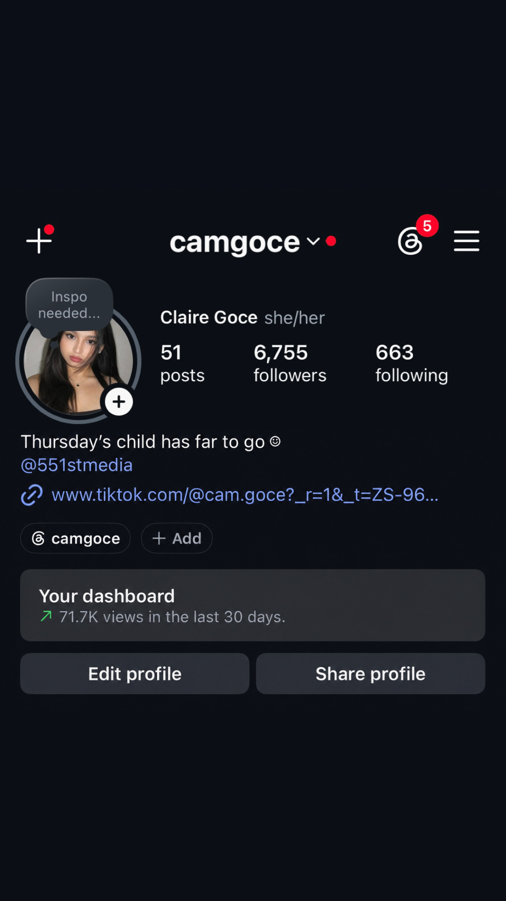

PORTFOLIO / 2026 · METRO MANILA
GRAPHIC DESIGNER · MULTIMEDIA ARTIST · SOCIAL MEDIA
ClaireGoce
I make visual stories
with personality.
creative by nature.
curious by choice.
CG / 01
DESIGN · STORY · MOTIONORIGINAL PORTRAIT / 2026
01DESIGN
STORY
MOTION
STORY
MOTION
01
THE WORKWelcome to my
Welcome to my
little visual universe.
From sports graphics and editorial layouts to photography, production and social content — this is where my ideas get a place to live.
SELECTED WORK / 2024—2026CLICK ANY IMAGE TO SEE IT IN FULL ↗
01
faster deadlines.
UAAP / GRAPHIC DESIGNGame day,
fast hands.Game day,
designed.
faster deadlines.
UAAP SEASON 87—89 · GRAPHIC DESIGN + MEDIA EXPERIENCE13 WORKS · DRAG / SWIPE / USE ARROWS →
Official UAAP graphics across basketball and volleyball, plus the live media experience — Player of the Game, final scores, championships and publication-ready sports visuals.
13 SELECTED WORKS02
UAAP Season 88
PUBLICATION / EDITORIALBuilt to be
Head Layout ArtistBuilt to be
held.
UAAP Season 88
OPEN
THE
BOOK ↗
THE
BOOK ↗
Visual layout and publication design for the official UAAP Season 88 Coffee Table Book, collaborating with photographers, writers and editors.
03
PHOTOGRAPHYFreeze the
sports / product / street / eventFreeze the
moment.
05
PRODUCTION / NATIONAL UNIVERSITYBehind the
Christmas Station IDBehind the
camera.
Production Team Member
Assisted in multimedia production and creative content development, supporting visual storytelling and production planning.
06
551ST MEDIA / DESIGNBuild the
communicate / organize / createBuild the
visual language.
A LITTLE ZINE
OF 551ST THINGS
OF 551ST THINGS
07
EVENT PHOTOGRAPHYReset the
TechFiesta: RESETReset the
frame.
EVENT PHOTOGRAPHY / 04 FRAMESShot.
Shot.
Developed.
Released.
Four moments from National University TechFiesta: RESET.
SHUTTER READY 2026 / RESET
CLAIRE / CAM
REC
PRINT OUT
Official event photography for National University TechFiesta: RESET — documentation and promotional imagery delivered within production deadlines.
08
OTHER PROMOTIONAL MATERIALSIdeas in
not one box.Ideas in
different forms.
HELLO / I'M CLAIRE
02 / ABOUTA creative who likes
A creative who likes
the messy middle.
I'm a Multimedia Artist specializing in graphic design, social media content creation, branding, photography and multimedia production.
I enjoy the overlap between strategy and aesthetics — the part where an idea gets shaped, edited, tested, and finally becomes something people remember.
CANVALIGHTROOMFIGMACAPCUTCREATIVE DIRECTION
03 / EXPERIENCEThings I've
Things I've
been part of.
Vice President for Internal Affairs
551st Media — National University
UAAP Media Coverage Staff
UAAP Seasons 87–89
Head Layout Artist
National University UAAP Season 88 Coffee Table Book
Production Team Member
National University Christmas Station ID
Event Photographer
National University TechFiesta: RESET
04 / LITTLE WINSProof that
Proof that
the work travels.
DEAN'S LISTER × 2023–2024DEAN'S LISTER × 2024–2025DEAN'S LISTER × 2025–2026MAKATI ROTARY HUMAN RIGHTS SHORT FILM SPECIAL AWARDEENU CINETECH PEOPLE'S CHOICENU TECHFIESTA 2.0 PEOPLE'S CHOICE
✦
LET'S MAKE
SOMETHING
LET'S MAKE
SOMETHING
05 / CONTACT